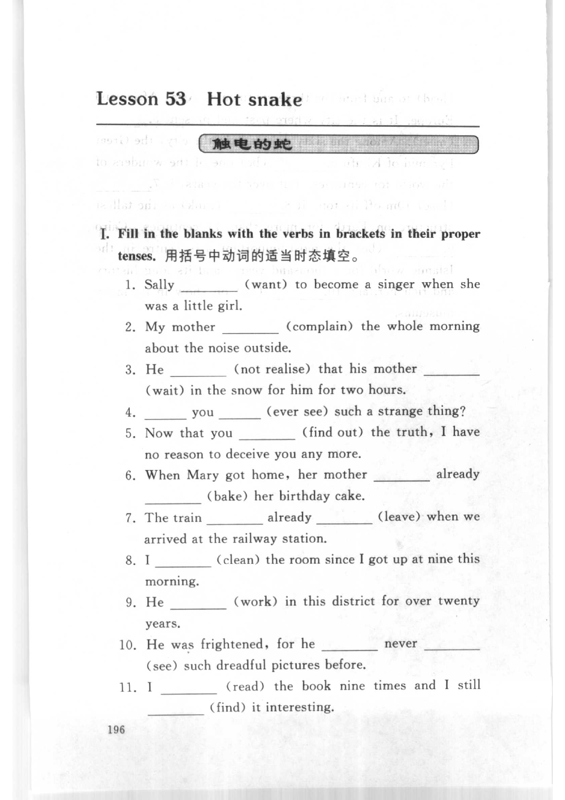
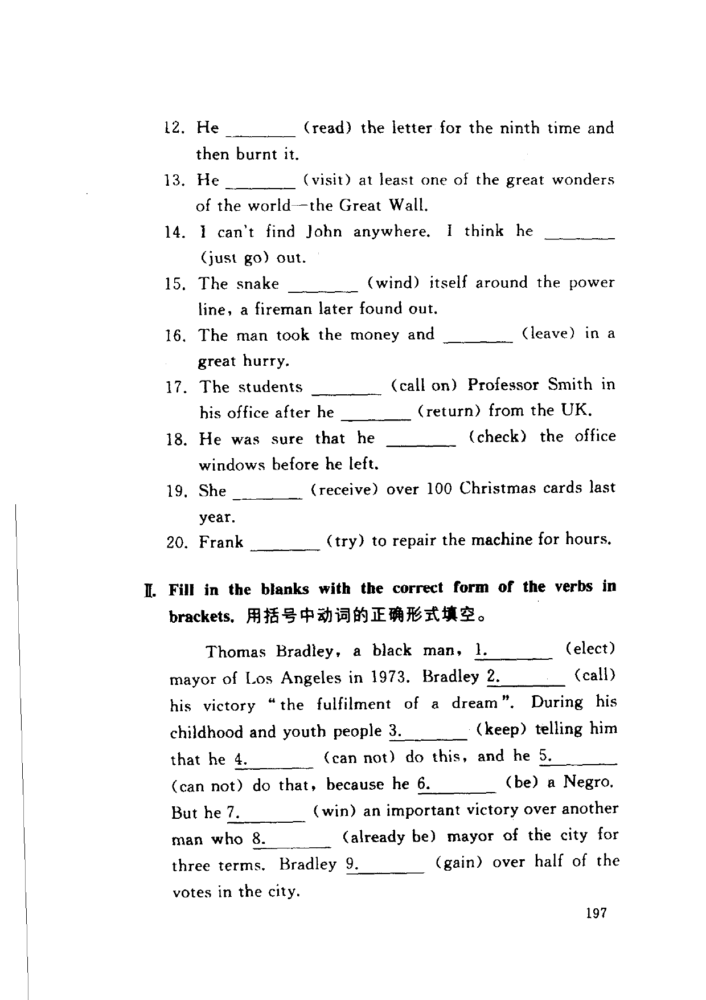
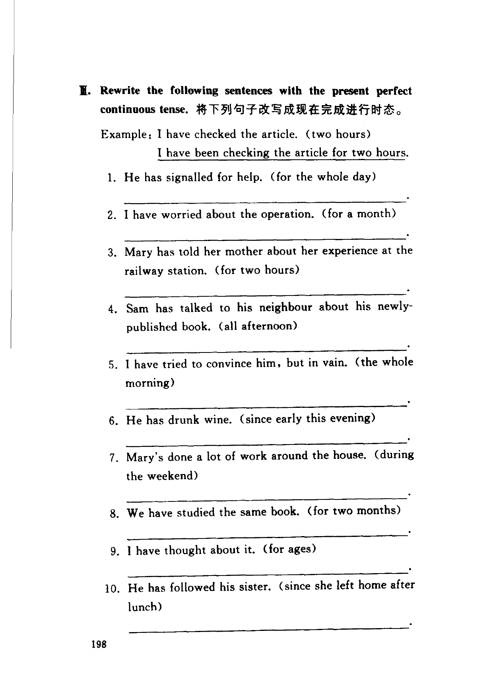

Grammar exercises · 语法练习
I. Fill in the blanks with the verbs in brackets in their proper tenses.
用括号中动词的适当时态填空。
-
I. Proper tense — Sally (want) to become a singer when she was a little girl.
-
I. Proper tense — My mother (complain) the whole morning about the noise outside.
-
I. Proper tense — He (not realise) that his mother (wait) in the snow for him for two hours.
-
I. Proper tense — you (ever see) such a strange thing?
-
I. Proper tense — Now that you (find out) the truth, I have no reason to deceive you any more.
-
I. Proper tense — When Mary got home, her mother already (bake) her birthday cake.
-
I. Proper tense — The train already (leave) when we arrived at the railway station.
-
I. Proper tense — I (clean) the room since I got up at nine this morning.
-
I. Proper tense — He (work) in this district for over twenty years.
-
I. Proper tense — He was frightened, for he never (see) such dreadful pictures before.
-
I. Proper tense — I (read) the book nine times and I still (find) it interesting.
-
I. Proper tense — He (read) the letter for the ninth time and then burnt it.
-
I. Proper tense — He (visit) at least one of the great wonders of the world—the Great Wall.
-
I. Proper tense — I can’t find John anywhere. I think he (just go) out.
-
I. Proper tense — The snake (wind) itself around the power line, a fireman later found out.
-
I. Proper tense — The man took the money and (leave) in a great hurry.
-
I. Proper tense — The students (call on) Professor Smith in his office after he (return) from the UK.
-
I. Proper tense — He was sure that he (check) the office windows before he left.
-
I. Proper tense — She (receive) over 100 Christmas cards last year.
-
I. Proper tense — Frank (try) to repair the machine for hours.
II. Fill in the blanks with the correct form of the verbs in brackets.
用括号中动词的正确形式填空。
Thomas Bradley, a black man, 1. (elect) mayor of Los Angeles in 1973. Bradley 2. (call) his victory “the fulfilment of a dream”. During his childhood and youth people 3. (keep) telling him that he 4. (can not) do this, and he 5. (can not) do that, because he 6. (be) a Negro. But he 7. (win) an important victory over another man who 8. (already be) mayor of the city for three terms. Bradley 9. (gain) over half of the votes in the city.
-
II. Correct form — Thomas Bradley, a black man,
1.(elect) -
II. Correct form — Bradley
2.(call) -
II. Correct form — people
3.(keep) -
II. Correct form — that he
4.(can not) -
II. Correct form — and he
5.(can not) -
II. Correct form — because he
6.(be) -
II. Correct form — But he
7.(win) -
II. Correct form — who
8.(already be) -
II. Correct form — Bradley
9.(gain)
III. Rewrite the following sentences with the present perfect continuous tense.
将下列句子改写成现在完成进行时态。
Example: I have checked the article. (two hours)
I have been checking the article for two hours.
-
III. Present perfect continuous — He has signalled for help. (for the whole day)
-
III. Present perfect continuous — I have worried about the operation. (for a month)
-
III. Present perfect continuous — Mary has told her mother about her experience at the railway station. (for two hours)
-
III. Present perfect continuous — Sam has talked to his neighbour about his newly-published book. (all afternoon)
-
III. Present perfect continuous — I have tried to convince him, but in vain. (the whole morning)
-
III. Present perfect continuous — He has drunk wine. (since early this evening)
-
III. Present perfect continuous — Mary’s done a lot of work around the house. (during the weekend)
-
III. Present perfect continuous — We have studied the same book. (for two months)
-
III. Present perfect continuous — I have thought about it. (for ages)
-
III. Present perfect continuous — He has followed his sister. (since she left home after lunch)
Original images · 原图对照
Expand a page to compare it with the transcription. Open the original in a new tab to zoom in.
展开原图核对文字，也可以在新标签页打开原图放大查看。
Book page 196 · Exercise I (proper tenses, items 1–11)
Open original · 打开原图 ↗ Download original · 下载原图


Book page 197 · Exercise I (items 12–20) and Exercise II (correct form, 9-blank passage)
Open original · 打开原图 ↗ Download original · 下载原图


Book page 198 · Exercise III (present perfect continuous, example and items 1–10)
Open original · 打开原图 ↗ Download original · 下载原图


Your notes and answers
Use this space for longer responses or exercises that do not have an individual answer box.